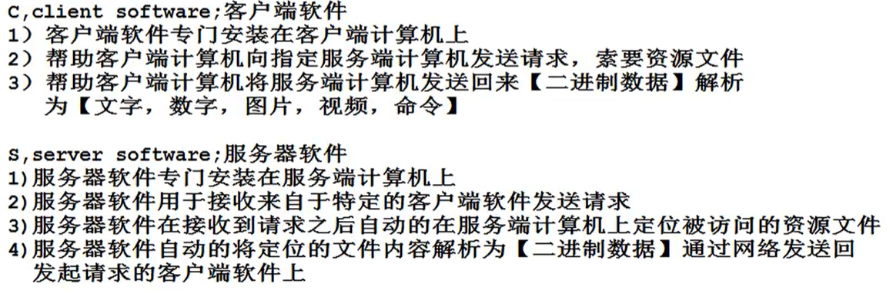

1、记忆互联网通信流程的细节
2、 （1）控制浏览器行为技术：HTML，CSS，JavaScript
（2）控制硬盘上数据库行为技术：mysql数据库服务器管理使用（SQL重点），JDBC规范
（3）控制服务端java行为技术：Http服务器，Servlet，JSP
（4）互联网通信流程开发规则：MVC
一、什么是互联网通信？
两台计算机通过网络实现文件共享行为，就是互联网通信。
二、互联网通信过程角色划分：
1、客户端计算机：用于发送请求，索要资源文件
2、服务端计算机：用于接收请求，并提供相应的资源文件计算机
三、互联网通信模型
1、C/S通信模型：


2、B/S通信模型：


四、共享资源文件：
1、可以通过网络进行传输的文件，都被称为共享资源文件
所有的文件内容都可以通过网络传输，所有文件都是共享资源文件。
2、Http服务器对于共享资源文件的分类
1、静态资源文件
文件内容是固定的。（文档，图片，视频，浏览器文件（.html .css .js））
2、动态资源文件
文件存放命令，并且命令不能在浏览器编译与执行，只能在服务器端计算机编译执行，这样的文件被称为动态资源文件。（.class）


浏览器请求行为控制通过前端技术实现。


一、控制浏览器发送请求地址
1、超链接
格式：<a href='请求地址'>提示信息</a>
2、表单标签命令
格式<form action='请求地址'>
<input type='submit'>
</form>
二、控制浏览器发送请求采用的方式
1、请求方式：决定浏览器在发送请求时的行为特征
2、浏览器可以选择请求方式：7种，目前为止只考虑【POST请求方式】和【GET请求方式】
3、GET请求方式：
1、要求浏览器发送请求时，携带的【请求参数数量】不能超过4k。
2、要求浏览器发送请求时，必须在浏览器地址栏上将【请求参数信息】展示出来
3、要求浏览器发送请求时，必须将请求参数信息保存在Http请求协议包【请求头】中
4、要求浏览器在接收到服务器返回的资源文件内容后，必须将资源文件内容保存在浏览器的缓存中
POST请求方式：
1、要求浏览器发送请求时，可以携带任意数量的【请求参数】
2、要求浏览器发送请求时，必须在浏览器地址栏上隐藏请求【参数信息】
3、要求浏览器发送请求时，必须将请求参数信息保存在Http请求协议包【请求体】中
4、禁止浏览器将服务器返回资源文件内容进行保存【阅后即焚】
4、控制浏览器发送请求时采用GET请求方式
1、超链接标签命令在执行时，要求浏览器必须采用GET方式发送请求。
2、表单标签存在一个method属性，通过这个属性可以要求浏览器采用对应的请求方式发送请求 method属性默认值为get
<form action='请求地址' method='get'>
<form action='请求地址' method='post'>
5、控制浏览器发送请求时采用post请求方式
<form action='请求地址' method='post'>
6、请求方式适用场景
1、考虑到post请求方式，用户可以将【病毒文件】发送到服务器进行攻击，因此绝大多数门户级网站拒绝接受post请求。
2、必须使用post请求方式的场景
1、文件上传，必须用post。
2、发起登录验证（隐私信息），必须使用post。
3、索要实时变化的信息必须使用post。（get有缓存，第二次访问可能是缓存中的信息，不是实时信息）
三、控制浏览器发送请求携带请求参数
1、请求参数格式
请求地址？请求参数名1=值1&请求参数名2=值2
2、浏览器发送请求时携带的请求参数来源：
1.通过超链接标签命令指定请求参数
2.通过表单域标签命令指定请求参数
3、通过超链接标签命令指定请求参数(请求参数固定)
<a href='http://www.baidu.com?userName=mike&password=123'>百度</a>
4、通过表单域标签命令指定请求参数
4、1
表单域标签命令：
1>一组声明在form标签内部的标签命令
2>提示用户填写对应的【请求参数内容】，用于提供相对灵活的请求参数内容
3>所有的表单域标签都拥有两个属性【name,value】 name属性声名【请求参数名】，value属性声名【请求参数内容】
4、2
表单域标签的分类：
1、<input/>
2、<select></select>
3、<textarea></textarea>
表单域标签的value默认值
1、大多数表单域标签value默认值是空字符串userName='';
2、对于radio与checkbox来说，value属性默认值‘on’字符串。
表单域标签作为请求参数条件：
1、标签在form内部
2、标签必须声明name属性
3、对于radio标签与checkbox标签除了上述两个条件，还必须满足第三个条件，第三个条件radio与checkbos必须再被选中的情况下才可以作为请求参数。
4、如果表单域标签使用disabled修饰时，失去作为请求参数的条件。
5、表单域标签使用readonly修饰，表示只读，可以提交请求参数。